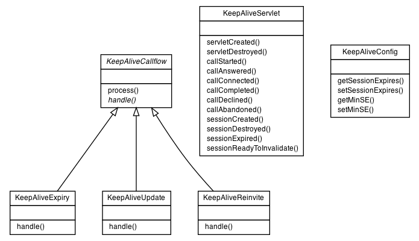

|
|||||||||
| PREV PACKAGE NEXT PACKAGE | FRAMES NO FRAMES | ||||||||

| Class Summary | |
|---|---|
| KeepAliveCallflow | |
| KeepAliveConfig | |
| KeepAliveExpiry | |
| KeepAliveReinvite | This class manages keep-alive requests by using re-INVITEs. |
| KeepAliveServlet | |
| KeepAliveUpdate | This class manages keep-alive requests by using UPDATEs. |
|
|||||||||
| PREV PACKAGE NEXT PACKAGE | FRAMES NO FRAMES | ||||||||